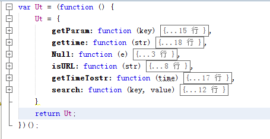

coolAdmin 内置函数使用介绍
此教程中的所有函数，均可在本页面F12打开控制台，在控制台中测试，以便观察结果。
1：工具类 Ut
方法截图：

Ut 工具类在引入coolAdmin 后就可以使用了，下面为Ut工具类的具体使用
//==================Ut.getParam=======================
//地址栏为 http://www.zhangyu.tv?key1=haha&key2=xixi
Ut.getParam() // {key1:"haha",key2:"xixi"}
Ut.getParam("key1")// "haha"
//==================Ut.gettime=======================
var str = $("#start-time").val()//2016-01-08 12:00
Ut.gettime(str)//1452225600000
//==================Ut.Null=======================
var a, b = null, c = undefined, e = "";
f = 0, g = false
Ut.Null(a);//true
Ut.Null(b);//true
Ut.Null(c);//true
Ut.Null(d);//true
Ut.Null(e);//true
Ut.Null(f);//true
Ut.Null(g);//true
//==================Ut.isURL=======================
var url1 = "http://www.zhangyu.tv"
var url2 = "www.zhangyu.tv"
Ut.isURL(url1);//true
Ut.isURL(url2);//false
//==================Ut.getTimeTostr=======================
Ut.getTimeTostr(1452225600000);//2016-01-08 12:00
//==================Ut.search=======================
//地址栏为 http://www.zhangyu.tv?key1=haha&key2=xixi
Ut.search("key3", "hehe")//地址栏为 http://www.zhangyu.tv?key1=haha&key2=xixi&key3=hehe
2：自定义系统弹窗zalert()
系统弹窗函数 alert()。自定义弹窗函数 zalert()
测试
$(".xxx").on("click",function(){
zalert("hellow")//（此函数将不会阻塞其他函数的执行）
})
3： unixtime 转换为字符串
//==========html 原始数据==================
<tr>
<td class="mytime" time="1452225600000"> </td>
</tr>
//==========html 预期结果==================
<tr>
<td class="mytime" time="1452225600000">2016-01-08 12:00 </td>
</tr>
//=========方案1： 自己写js处理====================
$(".mytime").each(function () {
var time = $(this).attr("time");
if (Ut) {
var str = Ut.getTimeTostr(time)
$(this).html(str);
}
})
//=========方案2：coolAdmin 类库处理====================
<tr>
<!------只需要给含有时间的td 加上class time ，然后将unix time 设置给属性 time,结果如下------>
<td class="time" time="1452225600000"> </td>
</tr>
tr td,并不是必须的，只要有class='time' 就行了
4：日期控件初始化
//==========java ==================
mv.addObject("start", System.currentTimeMillis());
//==========jsp ==================
<input type="text" id="mytime" time="${start}" />
//=========js 方法1： 自己加载日期插件====================
$("#mytime").datetimepicker();//初始化日期插件
//赋值默认值
var start = $("#mytime").attr("time")
if (start != null) {
var start = new Date(Number(start));
var str = Ut.getTimeTostr(start)
$("#mytime").val(str);
}
//=========js 方法2： 给input 加上特殊id====================
//==========jsp ==================
<input type="text" id="start-time" start="${start}" class="timepicker"/>
<input type="text" id="end-time" end="${start}" class="timepicker"/>
class="timepicker" 有此class 的input 将会初始化日期插件
id="start-time" start="${start}" 会给默认将start 的unixtime 将转换为字符串
id="end-time" end="${start}" end 的unixtime 将转换为字符串
此版本只针对这两个id(需要一一对应)处理，做默认转换，其他id属性将不转换，可自己手写。